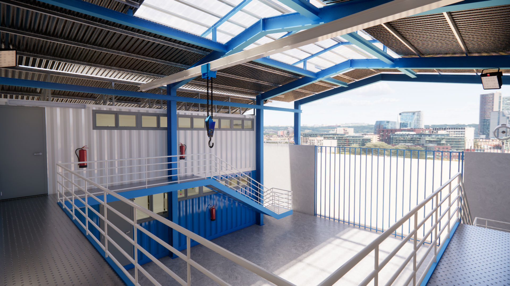
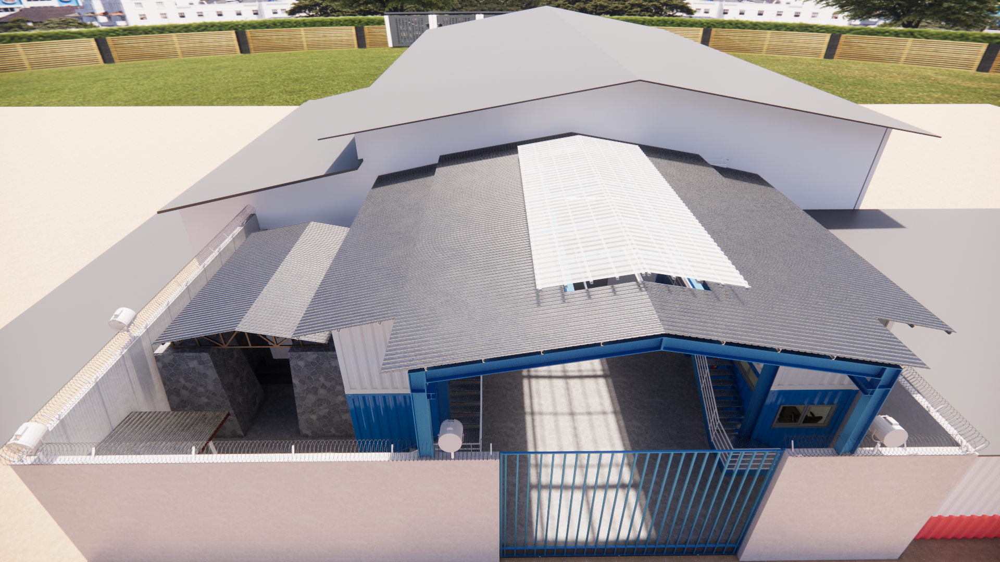
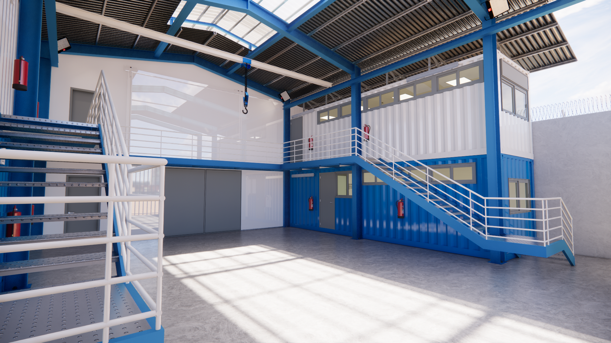
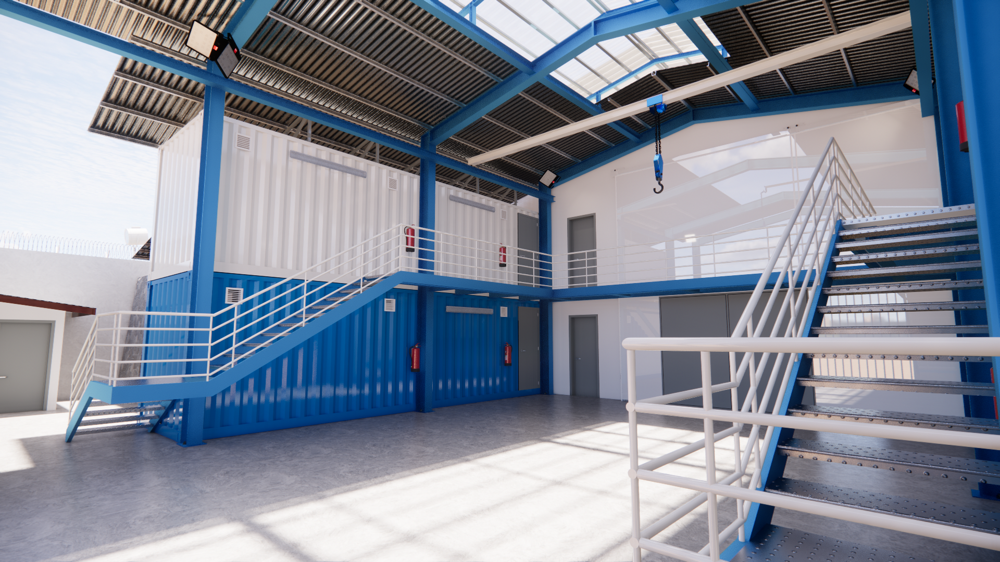

Performance et Logistique Intégrée
La Base Industrielle Petrofor (TCP) est un projet complexe alliant bureaux administratifs, laboratoires de haute précision et entrepôts logistiques. Le défi architectural consistait à créer un environnement de travail sécurisé et efficace au sein d'une structure industrielle robuste.
Le projet utilise des solutions innovantes telles que l'aménagement de conteneurs pour les modules de laboratoire et de magasin, offrant une flexibilité maximale. L'intégration de systèmes de levage (palan et pont roulant sur structure IPE) et une toiture bioclimatique avec tôle translucide garantissent une exploitation optimale tout en favorisant le confort thermique et l'éclairage naturel.



